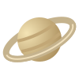

让内容垂直居中
默认主轴水平时，使用 align-items: center 沿垂直的交叉轴对齐；父容器需要有可用高度。
我在正中间
.parent {
display: flex;
min-height: 120px;
align-items: center;
justify-content: center;
}如果主轴改为 column，垂直居中应使用 justify-content: center。
EXPLORE OUR SOLAR SYSTEM
一颗恒星 · 八大行星 · 无限探索从水星到海王星，用数据认识我们的宇宙邻居。
探索行星的大小、轨道与温度，发现太阳系的秩序。
MERCURY → VENUS → EARTH → MARS → JUPITER → SATURN → URANUS → NEPTUNE




 SOLAR SYSTEM / 图示不按真实比例
SOLAR SYSTEM / 图示不按真实比例
八大行星
类地行星
巨行星
中央恒星：太阳
01 / PLANET ATLAS
02 / THINKING
默认主轴水平时，使用 align-items: center 沿垂直的交叉轴对齐；父容器需要有可用高度。
.parent {
display: flex;
min-height: 120px;
align-items: center;
justify-content: center;
}如果主轴改为 column，垂直居中应使用 justify-content: center。
给子项设置 flex: 1，从零基础尺寸均分主轴空间；清除最小尺寸限制，避免长内容撑开子项。
.parent { display: flex; }
.child {
flex: 1 1 0;
min-width: 0;
overflow-wrap: anywhere;
}均分高度时，父容器设定高度和 flex-direction: column，子项使用 min-height: 0，必要时设置 overflow: auto。
同一行中使用 align-items: stretch；子项保持自动高度，就能跟随内容最多的列一起伸展。
.parent {
display: flex;
align-items: stretch;
}
.child {
flex: 1;
}这是同一 Flex 行内的等高；如果换成多行，每行分别计算高度。
03 / THE COOL BOX
鼠标悬停，或用 Tab 键聚焦
200 × 72 px / 1.125 rem04 / LAYOUT EXERCISES
flex-direction: column以列为主轴，四个块从上到下依次排列。
position / z-index父容器相对定位，第二块绝对定位，并提高层级。
flex-wrap: wrap首尾占满一行，Two 与 Three 在中间一行均分。
columns / break-inside多列布局配合不等高图片，卡片整体不被分栏截断；阅读顺序为先上后下、再从左到右。